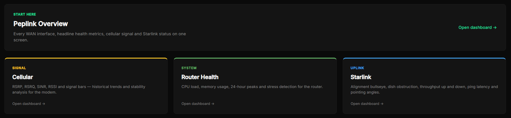

01 · Vistigo Maritime
Every vessel, always connected.
Starlink, cellular, failover and SIM data use, read from the dish, the router and the SIM provider, for every vessel.
- Starlink
- RSRP · RSRQ · SINR
- per-WAN throughput
- SIM data and cost
Vistigo by 444Video
Vessels at sea, streams on air, racks in the server room. Vistigo pulls the numbers out of the kit you already own and puts them in one set of live dashboards - so you see the problem before your customers do.

Three pillars, one platform
Each pillar is a set of collectors, dashboards and alerts tuned to one industry. They share one data platform, so a broadcaster on a ship sees the stream and the satellite link on the same timeline.
01 · Vistigo Maritime
Starlink, cellular, failover and SIM data use, read from the dish, the router and the SIM provider, for every vessel.

02 · Vistigo Broadcast
Transport stream health from probes and receivers, next to the contribution links it travels over.
| Device | Source | Reading | State |
|---|---|---|---|
| core-sw-01 | SNMP | Gi1/0/48 78% out | HIGH |
| server-07 | iDRAC | PSU 2 lost | PSU |
| pdu-a | SNMP v1 | 7.2 A | OK |
| ups-01 | SNMP | - | NO DATA |
03 · Vistigo Infra
Switches, servers, power and the quiet housekeeping that causes loud outages - polled, tuned and alerted.
How it works
No black box. Vistigo is built on open, proven tooling - Zabbix, Prometheus, VictoriaMetrics and Grafana - with our own collectors filling the gaps where a device only talks its own language.
House rule: a tile with no data turns purple, never green. A dead feed can't pass for a healthy one.
Why 444Video
444Video designs and runs bespoke broadcast and connectivity systems for organisations that can't afford downtime. Vistigo is the monitoring we built to run them, turned into a product.
Rack and disruption figures from the 444Video case study for a UK multiplex operator.
Get in touch
A fleet that drops off the map, a stream that glitches at 9pm, a rack that runs hot. Tell us about it and we'll show you what Vistigo would put on screen.